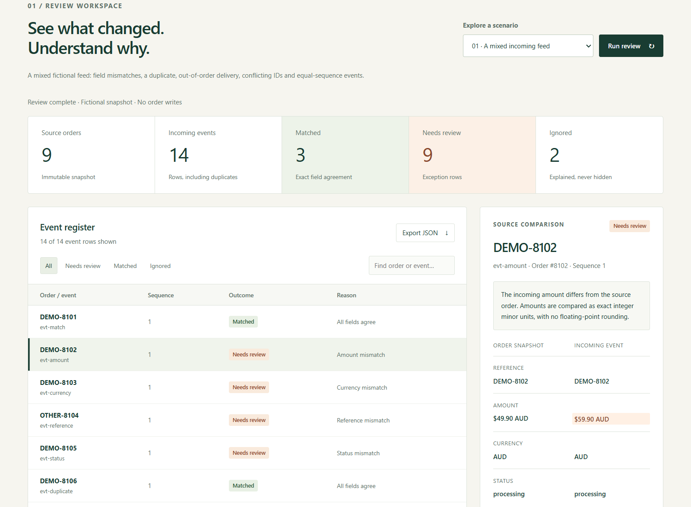
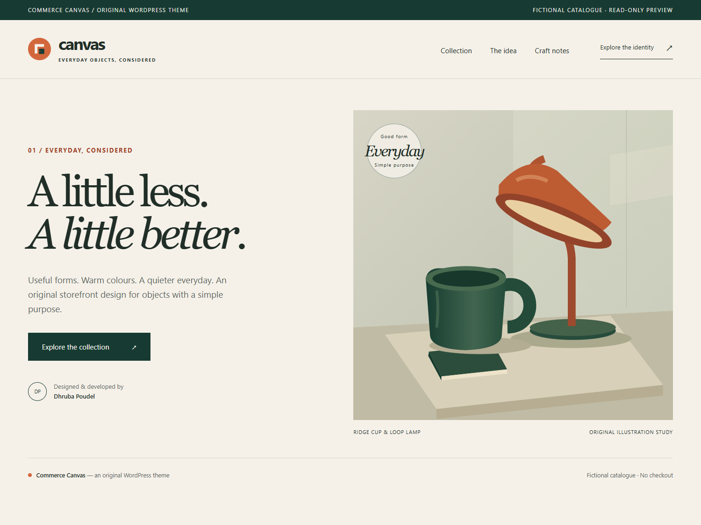

Original WordPress engineering · Theme & brand design
Commerce Reconcile
& Commerce Canvas
A precise commerce review workflow, paired with a complete storefront identity.


Agreement needs more than a similar-looking record.
Commerce integrations can receive duplicate deliveries, old events, changed payloads and records that disagree on amounts or status. A useful review must explain those differences without silently changing the source.
I designed and developed a bounded reconciliation engine and WordPress plugin to make those cases inspectable. Alongside the backend work, I created Commerce Canvas to demonstrate custom theme development, responsive interface design, logo design and a coherent brand system.
This is an original development showcase with fictional information. It is not client work, a live retail store or a claim of measured commercial savings.
One PHP engine, two deliberate entry points.
The WordPress plugin exposes an authenticated REST route, checks both capability and nonce, validates the JSON container and fields, and reads exact WooCommerce order IDs. Its pure PHP core compares integer minor-unit amounts, currency, reference and status.
The public demo calls that same core through a separate endpoint limited to four bundled scenarios. It accepts no arbitrary payload, remote URL, credentials or live order information. The two entry points share the rules while retaining different access boundaries.
- Conflicting event IDs
- Different payloads sharing an ID are held as conflicts. Arrival order cannot quietly choose a winner.
- Replay and sequence handling
- Exact prior-ledger replays and old sequences have explicit reasons. Equal highest sequences from different IDs remain ambiguous.
- Reproducible evidence
- Canonical report hashing identifies exact values. Source and incoming records remain separate.
- Controlled effect
- The plugin reads orders and returns a report. It does not apply events, charge, refund or save an order.
Original order snapshot ─┐
Incoming event snapshot ─┼─ Strict validation → PHP reconciliation → Explained JSON report
Explicit prior ledger ──┘
WordPress entry: capability + REST nonce → exact WooCommerce order reads
Public demo entry: four bundled fictional scenarios → no live store connectionBuild the identity and the interface together.
I designed the Commerce Canvas mark, cream/forest/terracotta palette, editorial hierarchy and nine original SVG illustrations. The identity carries through a responsive storefront, product disclosures, catalogue filters and a documented brand guide.
The installable classic WordPress theme supports logos, navigation, page content and optional WooCommerce catalogue display. Visible products are filtered at query time so newer hidden or search-only products cannot obscure a real published catalogue. When no visible products are available, the theme clearly labels its six fictional fallback objects.
Explore the design preview ↗ · Read the brand guide ↗ · Download the theme ↓
Check the boundaries as well as the happy path.
Verification separates standalone PHP and simulated-DOM checks from actual WordPress/WooCommerce execution and browser checks. Negative cases include malformed containers, permissions, missing or invalid nonces, event conflicts, out-of-order delivery, failed requests and stale replies.
The local runtime uses WordPress 7.1.3, WooCommerce 11.2.1, PHP 8.5.12 and SQLite Database Integration 3.1.1. The plugin was also exercised in real WordPress without WooCommerce. Fictional users, orders and products are created only in that disposable local environment and cleaned up by the integration checks.
Independent review found a JSON object/list validation gap and a request timeout gap. Both were corrected and covered by regression checks. Theme review also found the hidden-product query edge case, which was repaired before release.
A working showcase with explicit operating limits.
The baseline has 9 fictional source orders and 14 event rows: 3 matched, 9 exception rows and 2 ignored. These are event counts, not unique-order success rates or business performance. Correcting four field mismatches leaves identity, sequence and missing-order exceptions visible.
The public demo is stateless and hosted independently of WordPress; the theme link is a static design preview. The plugin is not a durable webhook inbox or background worker. Its observed sequence watermark does not prove that an order was applied. Hashes are not signatures or proof of source truth.
The release does not claim production qualification, all database/HPOS combinations, gateway acceptance or WordPress.org directory approval. WordPress, WooCommerce and development dependencies retain their own authorship and licences.